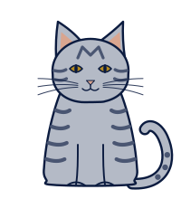

Error 404
Esta página colapsó al observarla.
Interferencia, la tabby gris del equipo, la tiró de la mesa. La función de onda no tiene arreglo, pero el resto del sitio sí está en su lugar.

Error 404
Interferencia, la tabby gris del equipo, la tiró de la mesa. La función de onda no tiene arreglo, pero el resto del sitio sí está en su lugar.